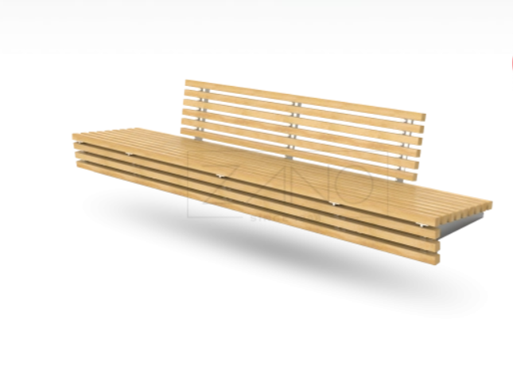
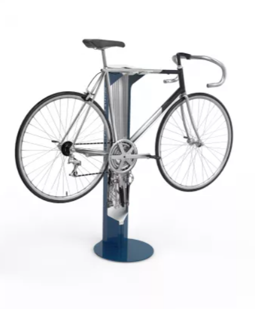

Projekta konteksts
Vai šis produkts der jūsu projektam?
Pievienojiet produktu pieprasījumam un aprakstiet projektu. Precizēsim piemērotāko risinājumu un nepieciešamo informāciju.

Projekta konteksts
Pievienojiet produktu pieprasījumam un aprakstiet projektu. Precizēsim piemērotāko risinājumu un nepieciešamo informāciju.